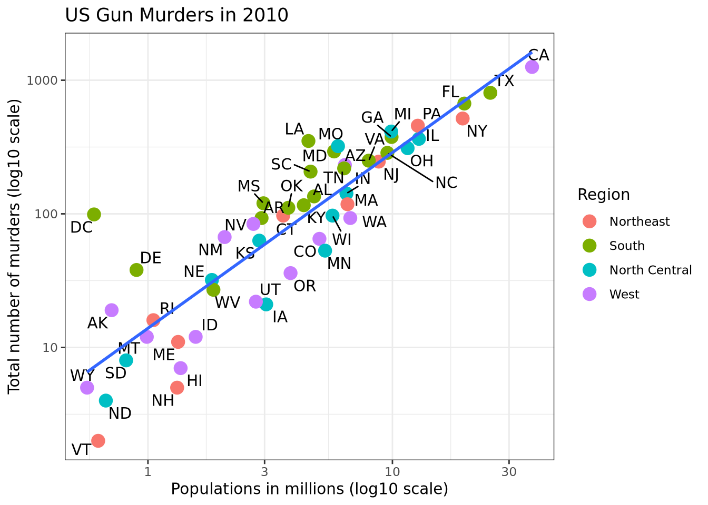

# loading packages
library(tidyverse)
library(knitr)
library(ggthemes)
library(ggrepel)
library(dslabs)Missing Data and Imputations - Data Science Capstone
Literature Review - Week 5
Missing Data and Imputations
Introduction: What is “Missing Data”? Missing data refers to the absence of values for certain observations or variables in a dataset. When collecting or recording data, it is not uncommon to encounter situations where information is not available for every individual or specific variable. Missing data can occur for various reasons, such as non-response by participants, data entry errors, equipment malfunctions, or simply because certain information was not collected. There are three main types of missing data: 1. Missing Completely at Random (MCAR): The missingness of data is unrelated to both observed and unobserved variables. In other words, the probability of data being missing is the same for all observations. 2. Missing at Random (MAR): The missingness is related to observed variables but not to the values of the missing data itself. In this case, the probability of data being missing can be predicted by other variables in the dataset. 3. Missing Not at Random (MNAR): The missingness is related to the values of the missing data itself, even after considering observed variables. This type of missing data can introduce bias and is often more challenging to handle. Handling missing data is crucial in statistical analysis because it can lead to biased or inefficient results if not addressed properly. Researchers employ various techniques, such as imputation methods, to estimate or replace the missing values and ensure the validity and reliability of their analyses. Imputation involves filling in missing values with plausible estimates based on the observed data or using statistical models to predict missing values. Researchers need to be aware of the nature and mechanisms of missing data in their datasets, as the choice of imputation method depends on these factors. Ignoring missing data or handling it incorrectly can impact the accuracy and generalizability of study findings. Imputation in R-language: Imputation is the process of estimating or replacing missing values in a dataset with possible substitutes. R, a programming language and environment for statistical computing and graphics, provides various tools and packages for imputing missing data. Imputation methods in R aim to fill in the missing values using statistical techniques, ensuring that the dataset remains suitable for analysis.
SCOPE OF OUR PROJECT: 1. Understanding the Importance of Handling Missing Data: - Missing data is a prevalent issue in datasets, and its improper handling can lead to biased and unreliable results. Recognizing the impact of missing data on statistical analyses is crucial for producing accurate and meaningful insights. 2. Diverse Imputation Methods in R: - R-Language offers a rich set of tools and packages for imputing missing data. The project explored diverse methods, including mean/median imputation, multiple imputation, k-nearest neighbors, random forest, and rule-based techniques. Each method comes with its advantages and limitations, emphasizing the importance of selecting an appropriate approach based on the dataset characteristics. 3. Practical Implementation in R: - The project demonstrated the practical implementation of various imputation methods using R. Through hands-on examples and code snippets, the project showcased how to use packages like mice, missForest, and other built-in functions to impute missing values. 4. Consideration of Assumptions and Limitations: - Each imputation method relies on certain assumptions, and understanding these assumptions is crucial for making informed choices. Additionally, it is essential to acknowledge the limitations of each method and consider the potential impact on the validity of results. 5. Future Directions and Emerging Trends: - The project touched upon emerging trends in missing data imputation, such as Bayesian approaches and the integration of machine learning techniques. Recognizing the evolving landscape of imputation methods allows for staying at the forefront of advancements in the field. 6. Best Practices and Recommendations: - The project outlined best practices for handling missing data, emphasizing the importance of careful consideration of the missing data mechanism, validation of imputation results, and sensitivity analysis. These practices contribute to the reliability and robustness of statistical analyses. 7. User-Friendly Implementation in R: - R-Language, with its extensive libraries and user-friendly syntax, proved to be a powerful tool for implementing missing data imputation methods. The project highlighted the ease with which researchers can leverage R for handling missing data in their analyses.
Related work: When undertaking a project on any topic, it’s essential to explore existing research to build a strong foundation and understand the current state of the field. Here are some key references and related works on our project: 1. “Statistical Analysis with Missing Data” by Roderick J. A. Little and Donald B. Rubin (2002): - This seminal work provides a comprehensive overview of statistical methods for handling missing data. It covers fundamental concepts, challenges, and various imputation techniques. 2. “Multiple Imputation for Nonresponse in Surveys” by Donald B. Rubin (1987): - Rubin’s work on multiple imputation is crucial for understanding the theoretical foundations of this approach. The book delves into the statistical theory behind multiple imputation and its application in survey research. 3. “Flexible Imputation of Missing Data” by Stef van Buuren (2018): - This book focuses on the mice package in R and its application for multiple imputation. It provides practical insights into handling missing data and implementing imputation methods using R. 4. “Handbook of Statistical Methods for Missing Data” edited by Enders, Craig K., and Joseph F. Halcon (2012): - This handbook is a comprehensive resource covering various statistical methods for handling missing data. It includes contributions from multiple authors, offering a diverse perspective on the topic. 5. “Missing Data: A Gentle Introduction” by Patrick E. McKnight, Katherine M. McKnight, and Soonhwa Seok (2007): - This introductory book provides a gentle and accessible introduction to missing data concepts, challenges, and common imputation techniques. It’s suitable for those new to the field. 6. “missForest: Nonparametric Missing Value Imputation using Random Forest” by Stekhoven, Daniel J., and Peter Bühlmann (2012): - The paper introduces the missForest package in R, which uses a random forest algorithm for imputation. It is a valuable reference for understanding and implementing this specific imputation method. 7. “Imputation of Missing Values in Longitudinal Data: A Comparison of Modern Techniques” by Allison et al. (2012): - This research paper compares different imputation techniques, including multiple imputation, for handling missing values in longitudinal data. It provides insights into the performance of various methods.
METHODS and APPLICATIONS: Common Imputation Methods in R: 1. Mean/Median Imputation: - Replace missing values with the mean or median of the observed values in the variable. - mean() and median() functions in R can be used for this method. 2. Multiple Imputation: - Generate multiple sets of plausible values for each missing data point, considering the uncertainty associated with imputation. - The mice (Multivariate Imputation by Chained Equations) package in R is commonly used for multiple imputation. 3. K-Nearest Neighbors (KNN) Imputation: - Impute missing values based on the values of their nearest neighbors in the dataset. - The impute.knn() function in the impute package is a popular choice for KNN imputation. 4. Expectation-Maximization (EM) Algorithm: - An iterative algorithm that estimates missing values based on the observed data. - Implemented in R through functions like EM() in the mixtools package. 5. Random Forest Imputation: - Utilize a random forest algorithm to predict missing values based on other variables. - The missForest package provides an implementation of this method. 6. Next or Previous Value: - Method: Replace missing values with the next or previous observed value in the dataset. - Application: Suitable for time-series data where missing values are expected to follow a temporal pattern. 7. K Nearest Neighbors (KNN): - Method: Impute missing values by averaging or using the majority vote of the (k) nearest neighbors in the feature space. - Application: Effective for imputing values based on similarities in multivariate space. 8. Maximum or Minimum Value: - Method: Replace missing values with the maximum or minimum observed value in the variable. - Application: Simple imputation method when the assumption is that missing values are extreme values. 9. Missing Value Prediction: - Method: Predict missing values using statistical models or machine learning algorithms. - Application: Useful when there is a complex relationship between variables, and predictions can be made based on the observed data. 10. Most Frequent Value: - Method: Replace missing values with the most frequently occurring value in the variable. - Application: Appropriate for categorical variables or when missing values are likely to be the mode. 11. Average or Linear Interpolation: - Method: Impute missing values by taking the average of adjacent values or using linear interpolation. - Application: Common for time-series data where a linear relationship between observations is assumed. 12. (Rounded) Mean or Moving Average or Median Value: - Method: Impute missing values with the mean, median, or moving average of observed values. - Application: Suitable for imputing missing values when the variable exhibits a stable trend over time. 13. Fixed Value: - Method: Replace missing values with a predetermined fixed value. - Application: Used when a constant value is deemed appropriate for imputation. 14. Rule-based Imputation Technique: - Method: Apply predefined rules or logic to impute missing values based on the characteristics of the dataset. - Application: Customized imputation based on domain knowledge or specific data patterns. 15. Random Forest: - Method: Utilize a random forest algorithm to predict missing values based on other variables in the dataset. - Application: Effective for complex relationships and interactions between variables, often providing accurate imputations. These methods offer different approaches to handling missing data, and the choice of method depends on the characteristics of the dataset and the assumptions about the missing data mechanism. It’s crucial to carefully consider the context and nature of the data when selecting an imputation technique. FORMULAE FOR EACH METHOD: 1. Mean/Median Imputation: - Mean Imputation: ({X} = ) - Median Imputation: (M = (X_1, X_2, …, X_n)) In both cases, missing values are replaced with the mean or median of the observed values in the variable (X). 2. Multiple Imputation: - The multiple imputation process involves three steps: a) Imputation (m times): Generate (m) imputed datasets, where missing values are filled using a specified imputation method. b) Analysis (m times): Analyze each imputed dataset separately using the desired statistical analysis. c) Pooling: Combine the results from the (m) analyses to obtain final estimates and standard errors. The imputation step often involves drawing imputed values from a predictive distribution based on observed data. 3. K-Nearest Neighbors (KNN) Imputation: - For each missing value (X_{}) in a variable (X): [X_{} = {i=1}^{k} X_i] - Where (X_i) represents the observed values of the (k) nearest neighbors to the missing value. 4. Expectation-Maximization (EM) Algorithm: - The EM algorithm iteratively estimates missing values using two steps: 1. Expectation (E-step): Compute the expected value of the missing data given the observed data and current parameter estimates. 2. Maximization (M-step): Update the parameter estimates to maximize the expected log-likelihood. The algorithm repeats these steps until convergence. 5. Random Forest Imputation: - Random Forest imputation involves training a Random Forest model using observed data to predict missing values. The exact formula is complex and involves the aggregation of predictions from multiple decision trees in the Random Forest. The imputed value is often the average (regression) or majority vote (classification) of the individual tree predictions. 6. Next or Previous Value: - Impute the missing value with the next or previous observed value in the time series. - Formula: (X{} = X_{}) (next or previous value) 7. K Nearest Neighbors (KNN): - Impute missing values based on the values of their (k) nearest neighbors. - Formula: (X_{} = {i=1}^{k} X_i) 8. Maximum or Minimum Value: - Impute the missing value with the maximum or minimum observed value in the variable. - Formula: (X{} = (X_{})) or (X_{} = (X_{})) 9. Missing Value Prediction: - Predict missing values using a regression model based on other observed variables. - Formula: Depends on the specific regression model used for prediction. 10. Most Frequent Value: - Impute the missing value with the most frequently observed value in the variable. - Formula: (X_{} = (X_{})) 11. Average or Linear Interpolation: - Impute missing values using the average or linear interpolation between adjacent observed values. - Formula: (X_{} = (X_{} + X_{})) 12. (Rounded) Mean or Moving Average or Median Value: - Impute missing values with the rounded mean, moving average, or median of observed values. - Formula: Depends on the specific method used for rounding or calculating the mean, moving average, or median. 13. Fixed Value: - Impute missing values with a predefined fixed value. - Formula: (X_{} = ) 14. Rule-based Imputation Technique: - Impute missing values based on predefined rules or conditions. - Formula: Depends on the specific rules or conditions defined for imputation. 15. Random Forest: - Utilize a random forest algorithm to predict missing values based on other variables. - Formula: The exact formula involves the aggregation of predictions from multiple decision trees in the Random Forest. The imputed value is often the average (regression) or majority vote (classification) of the individual tree predictions. These formulas provide a high-level overview of the imputation methods. However, the specific details may vary depending on the software implementation and the underlying statistical models used. For a more detailed understanding, it is recommended to refer to the original papers and documentation of the respective methods and packages.
CONCLUSION: In conclusion, the project on missing data and imputation using R-Language has provided a thorough exploration of diverse techniques for handling missing values. By delving into methods such as mean/median imputation, multiple imputation, k-nearest neighbors, and random forest, we have gained a nuanced understanding of their applications and limitations. The practical implementation in R demonstrated the accessibility of these methods, showcasing the importance of selecting an approach aligned with data characteristics. Emphasizing best practices, such as sensitivity analysis and validation, ensures the reliability of imputation results. This project not only equips researchers with practical skills for addressing missing data but also highlights the dynamic landscape of emerging trends, positioning them at the forefront of advancements in the field. Overall, the use of R-Language for missing data imputation underscores its effectiveness and user-friendly nature in facilitating robust statistical analyses.
SUMMARIES OF MY PAPERS: 1. An R function for imputation of missing cells in two-way data sets by EM-AMMI algorithm J Paderewski Link: https://scholar.google.com/scholar?hl=en&as_sdt=0%2C10&q=An+R+function+for+imputation+of+missing+cells&btnG=
Goal of the paper The paper delivers a R function for imputing missing values in two-way classification data sets, with a special focus on agricultural trials. The major purpose is to create a tool, the EM-AMMI algorithm, for imputing missing cells in datasets used for genotype-by-environment agricultural science studies. The significance stems from the frequent occurrence of missing data in agricultural experiments, as well as the requirement for trustworthy imputation methods to ensure the integrity of statistical studies. Methods: The paper employs the Expectation-Maximization AMMI (EM-AMMI) algorithm for imputing missing values in two-way data. The algorithm proceeds by estimating the parameters of the AMMI model, calculating adjusted means based on the model, filling in missing cells with these adjusted means, and iterating until convergence. The function allows users to specify the number of principal components and initial values for missing cells. Additionally, a repeatability check function is proposed to evaluate the reliability of the imputation, especially crucial for small datasets. Results/Limitations: The results demonstrate the effectiveness of the EM-AMMI algorithm in imputing missing values in agricultural trials, offering a practical solution for datasets with incomplete information. The function provides key output metrics such as the imputed matrix, sum of squares for principal components, iteration count, precision of convergence, and the number of principal components used. However, the paper acknowledges limitations, particularly the sensitivity of results to the initial values of missing cells, especially when the chosen number of principal components is excessive. The proposed repeatability check function helps address this issue by assessing the consistency of results across multiple runs. Conclusion: In conclusion, the paper addresses a crucial need in crop science research by providing a robust tool for imputing missing values in genotype-by-environment trials. The EM-AMMI algorithm, implemented as an R function, offers a valuable contribution to the field, facilitating reliable statistical analyses even in the presence of missing data. The proposed repeatability check enhances the confidence in the imputation process, making it a valuable resource for researchers dealing with incomplete datasets in agricultural trials.
- Missing value imputation approach for mass spectrometry-based metabolomics data R Wei, J Wang, M Su, E Jia, S Chen, T Chen, Y Ni Link: https://scholar.google.com/scholar?hl=en&as_sdt=0%2C10&q=Missing+value+imputation+approach+for+mass+spectrometry+based+metabolomics+&btnG=
Goal of the paper: The paper addresses the prevalent issue of missing values in mass-spectrometry (MS) based metabolomics data. The goal is to comprehensively compare and evaluate eight imputation methods (zero, half minimum (HM), mean, median, random forest (RF), singular value decomposition (SVD), k-nearest neighbors (kNN), and quantile regression imputation of left-censored data (QRILC)) for different types of missing values (missing not at random (MNAR), missing at random (MAR), and missing completely at random (MCAR)) using four metabolomics datasets. The study aims to provide insights into the performance of these methods under various conditions. Importance: Handling missing values in metabolomics data is crucial due to the inherent complexity of data acquisition, where certain compounds might not be identified or quantified in some samples. The selection of imputation methods significantly influences subsequent data analyses. The paper underscores the need for a systematic evaluation to guide researchers in choosing appropriate imputation methods based on the nature of missing values, ultimately enhancing the reliability of metabolomics studies. Methods: The paper employs a rigorous evaluation approach, comparing eight imputation methods across different types of missing values using metrics such as normalized root mean squared error (NRMSE), NRMSE-based sum of ranks (SOR), principal component analysis (PCA)/partial least squares (PLS)-Procrustes analysis, Student’s t-test, and correlation analysis. The imputation methods include established techniques like RF, kNN, and SVD, as well as specialized methods like QRILC for left-censored MNAR situations. Results/Limitations: The results highlight that RF performs best for MCAR/MAR situations, while QRILC is favored for left-censored MNAR. However, the study acknowledges that imputation performance decreases with an increasing number of missing values. Limitations include the sensitivity of imputation methods to the nature and extent of missing data. The paper emphasizes the need for a comprehensive strategy, proposing a web-tool (https://metabolomics.cc.hawaii.edu/software/MetImp/) to assist researchers in choosing and applying suitable imputation methods.
In conclusion, the paper contributes valuable insights into the selection of imputation methods for missing values in metabolomics data, offering practical recommendations and tools to enhance the accuracy and reliability of data analyses in this critical domain.
- Dealing with missing data in a multi-question depression scale: a comparison of imputation methods ###FM Shrive, H Stuart, H Quan, WA Ghali - BMC medical research …, 2006 – Springer### Goal of the Paper: The goal of this paper is to address the challenge of missing data in research projects, particularly in studies using self-report scales, with a focus on the Zung Self-reported Depression scale (SDS). The paper aims to compare and evaluate six different imputation techniques for handling missing data in the SDS. The overarching objective is to provide insights into the effectiveness of various imputation methods in different missing data scenarios, considering factors such as validity, ease of interpretability, and statistical expertise. Methods: The study involves 1580 participants from a surgical outcomes study who completed the SDS, a 20-question scale assessing depressive symptoms. Missing values are simulated using three scenarios: missing completely at random (MCAR), missing at random (MAR), and missing not at random (MNAR). Six imputation techniques are compared: multiple imputation, single regression, individual mean, overall mean, participant’s preceding response, and random selection. The evaluation involves comparing imputed mean SDS scores, standard deviations, Spearman correlation coefficient, percent misclassified, and the Kappa statistic against population statistics. Results: - Imputation Methods Evaluation (10% Missing): Multiple imputation (MI) stands out with the highest Kappa statistic (0.89), indicating ‘near perfect’ agreement. Single regression and individual mean imputation also yield favorable results. Random selection performs less well. - Effect of Increasing Missing Data (20%, 30%): MI maintains high Kappa statistics even as the percent of missing information increases. Individual mean and single regression show substantial agreement but with a slight decrease. Other methods exhibit declines in performance. - Unbalanced Missing Data Scenarios: MI generally performs well, but individual mean outperforms MI in some unbalanced scenarios. Conclusion: The paper concludes that multiple imputation is the most accurate method for handling missing data in most scenarios assessed for the SDS. Individual mean imputation, a simpler approach, is also deemed appropriate, demonstrating comparable accuracy and interpretability. The authors emphasize the importance of considering methodological assessments when confronted with missing data, suggesting a balance between validity, interpretability, and the expertise of the research team in selecting the optimal imputation method.
- Dealing with missing data in a multi-question depression scale: a comparison of imputation methods ###FM Shrive, H Stuart, H Quan, WA Ghali, BMC medical research methodology, 2006•Springer*** Goal of the Paper: The goal of the paper is to address the crucial issue of missing data in machine learning and data mining. The authors emphasize the significance of data quality in these fields and highlight the challenges posed by missing values, which can lead to biased results in knowledge discovery. The paper aims to introduce and implement an imputation approach using the IBK (k-Nearest Neighbors) classification algorithm to handle missing values in a dataset. Methods: 1. Introduction: The paper begins by discussing the importance of data quality in machine learning and data mining, with a focus on handling missing values. 2. Background: The background section provides an overview of data mining, preprocessing techniques, missing values, and imputation methods, particularly focusing on the K-Nearest Neighbors (KNN) algorithm for imputation. 3. Related Work: The authors review related work on missing data imputation, discussing different approaches and their applications. 4. Experimental Procedures: The paper outlines the experimental procedures, including the dataset used (from Juba Insurance & Reinsurance Company), the introduction of artificial missing values, and the proposed imputation method using the IBK algorithm. Results: The authors implement the proposed IBK imputation algorithm using the k-NN approach to handle missing values in the dataset. They demonstrate the process step-by-step, including data preprocessing, normalization, imputation, and analysis of the imputed dataset. The results are presented using visualizations, summary statistics, and a comparison between the original and imputed datasets. Conclusion: The paper concludes by summarizing the achieved results and the effectiveness of the proposed imputation approach. The authors emphasize the importance of data accuracy in knowledge discovery and suggest that the presented method can contribute to improving the quality of datasets used in machine learning and data mining. They also discuss potential future directions, such as exploring larger datasets and investigating missingness mechanisms automatically. In essence, the paper addresses the challenge of missing data in the context of machine learning and data mining, proposing a specific imputation method using the IBK classification algorithm.
Introduction
Assignment: 4
Dealing with missing data in a multi-question depression scale: a comparison of imputation methods ###FM Shrive, H Stuart, H Quan, WA Ghali - BMC medical research …, 2006 – Springer###
Goal of the Paper: The goal of this paper is to address the challenge of missing data in research projects, particularly in studies using self-report scales, with a focus on the Zung Self-reported Depression scale (SDS). The paper aims to compare and evaluate six different imputation techniques for handling missing data in the SDS. The overarching objective is to provide insights into the effectiveness of various imputation methods in different missing data scenarios, considering factors such as validity, ease of interpretability, and statistical expertise.
Methods: The study involves 1580 participants from a surgical outcomes study who completed the SDS, a 20-question scale assessing depressive symptoms. Missing values are simulated using three scenarios: missing completely at random (MCAR), missing at random (MAR), and missing not at random (MNAR). Six imputation techniques are compared: multiple imputation, single regression, individual mean, overall mean, participant’s preceding response, and random selection. The evaluation involves comparing imputed mean SDS scores, standard deviations, Spearman correlation coefficient, percent misclassified, and the Kappa statistic against population statistics.
Results: - Imputation Methods Evaluation (10% Missing): Multiple imputation (MI) stands out with the highest Kappa statistic (0.89), indicating ‘near perfect’ agreement. Single regression and individual mean imputation also yield favorable results. Random selection performs less well. - Effect of Increasing Missing Data (20%, 30%): MI maintains high Kappa statistics even as the percent of missing information increases. Individual mean and single regression show substantial agreement but with a slight decrease. Other methods exhibit declines in performance. - Unbalanced Missing Data Scenarios: MI generally performs well, but individual mean outperforms MI in some unbalanced scenarios.
Conclusion: The paper concludes that multiple imputation is the most accurate method for handling missing data in most scenarios assessed for the SDS. Individual mean imputation, a simpler approach, is also deemed appropriate, demonstrating comparable accuracy and interpretability. The authors emphasize the importance of considering methodological assessments when confronted with missing data, suggesting a balance between validity, interpretability, and the expertise of the research team in selecting the optimal imputation method.
Dealing with missing data in a multi-question depression scale: a comparison of imputation methods ###FM Shrive, H Stuart, H Quan, WA Ghali, BMC medical research methodology, 2006•Springer***
Goal of the Paper: The goal of the paper is to address the crucial issue of missing data in machine learning and data mining. The authors emphasize the significance of data quality in these fields and highlight the challenges posed by missing values, which can lead to biased results in knowledge discovery. The paper aims to introduce and implement an imputation approach using the IBK (k-Nearest Neighbors) classification algorithm to handle missing values in a dataset.
Methods: 1. Introduction: The paper begins by discussing the importance of data quality in machine learning and data mining, with a focus on handling missing values. 2. Background: The background section provides an overview of data mining, preprocessing techniques, missing values, and imputation methods, particularly focusing on the K-Nearest Neighbors (KNN) algorithm for imputation. 3. Related Work: The authors review related work on missing data imputation, discussing different approaches and their applications. 4. Experimental Procedures: The paper outlines the experimental procedures, including the dataset used (from Juba Insurance & Reinsurance Company), the introduction of artificial missing values, and the proposed imputation method using the IBK algorithm.
Results: The authors implement the proposed IBK imputation algorithm using the k-NN approach to handle missing values in the dataset. They demonstrate the process step-by-step, including data preprocessing, normalization, imputation, and analysis of the imputed dataset. The results are presented using visualizations, summary statistics, and a comparison between the original and imputed datasets.
Conclusion: The paper concludes by summarizing the achieved results and the effectiveness of the proposed imputation approach. The authors emphasize the importance of data accuracy in knowledge discovery and suggest that the presented method can contribute to improving the quality of datasets used in machine learning and data mining. They also discuss potential future directions, such as exploring larger datasets and investigating missingness mechanisms automatically. In essence, the paper addresses the challenge of missing data in the context of machine learning and data mining, proposing a specific imputation method using the IBK classification algorithm.
What is “method”?
This is an introduction to Kernel regression, which is a non-parametric estimator that estimates the conditional expectation of two variables which is random. The goal of a kernel regression is to discover the non-linear relationship between two random variables. To discover the non-linear relationship, kernel estimator or kernel smoothing is the main method to estimate the curve for non-parametric statistics. In kernel estimator, weight function is known as kernel function [@efr2008]. Cite this paper [@bro2014principal]. The GEE [@wang2014].
This is my work and I want to add more work…
Methods
The common non-parametric regression model is \(Y_i = m(X_i) + \varepsilon_i\), where \(Y_i\) can be defined as the sum of the regression function value \(m(x)\) for \(X_i\). Here \(m(x)\) is unknown and \(\varepsilon_i\) some errors. With the help of this definition, we can create the estimation for local averaging i.e. \(m(x)\) can be estimated with the product of \(Y_i\) average and \(X_i\) is near to \(x\). In other words, this means that we are discovering the line through the data points with the help of surrounding data points. The estimation formula is printed below [@R-base]:
\[ M_n(x) = \sum_{i=1}^{n} W_n (X_i) Y_i \tag{1} \] \(W_n(x)\) is the sum of weights that belongs to all real numbers. Weights are positive numbers and small if \(X_i\) is far from \(x\).
Another equation:
\[ y_i = \beta_0 + \beta_1 X_1 +\varepsilon_i \]
Analysis and Results
Data and Visualization
A study was conducted to determine how…
# Load Data
kable(head(murders))| state | abb | region | population | total |
|---|---|---|---|---|
| Alabama | AL | South | 4779736 | 135 |
| Alaska | AK | West | 710231 | 19 |
| Arizona | AZ | West | 6392017 | 232 |
| Arkansas | AR | South | 2915918 | 93 |
| California | CA | West | 37253956 | 1257 |
| Colorado | CO | West | 5029196 | 65 |
ggplot1 = murders %>% ggplot(mapping = aes(x=population/10^6, y=total))
ggplot1 + geom_point(aes(col=region), size = 4) +
geom_text_repel(aes(label=abb)) +
scale_x_log10() +
scale_y_log10() +
geom_smooth(formula = "y~x", method=lm,se = F)+
xlab("Populations in millions (log10 scale)") +
ylab("Total number of murders (log10 scale)") +
ggtitle("US Gun Murders in 2010") +
scale_color_discrete(name = "Region")+
theme_bw()